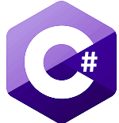

C, C# and C++ 
C
C the first out of these 3 langauges that was made, is based off and the successor of a programming language called B.
C is also been declared the most programming language and came to popularity in 1980. Its a relatively low level programming language and is one of the fastest langauge out there
I think C is a great language for starting off of because not only does it teach how to build high level code from low level functions, it also helps explains the computers processes when doing things like input output, memory handly and more
Using the information you gain off of C makes it alot easier to do complex tasks in bassically any other language.
C#
Currently they langauge I use the most, C# is an fantastic langauge for Object oriented programming its also pretty close to java if you have already learned that
C# was made in 2000 by microsoft. Its commonly used for game development, as it can be seen in 80% of the top games. It can be reffered to a mid level programming language
C++
C++ was made with system programming in mind, High efficiency rates and flexibilty of its design are its main highlights. Strengths being software infrastructure and resource-constrained applications, including desktop applications, video games, servers (e.g. e-commerce, web search, or databases), and performance-critical applications (e.g. telephone switches or space probes)
C++ is the starting point to get off of if you feel that C is too hard/difficult for you. Its still low/mid level enough for you to learn computers properly, and is used in a variety of circumstances.
However I have to say there is a major apparent flaw in all of three of these langauges, Compiling the code. Compiling is the method of turning the code we see on our screen that is understandable, into 1's and 0's that the computer can understand. The problem is that you require external compiliers and it gets very complicated that certain libraries only work with certain compiliers. Nonetheless we are in luck as most supporting IDE's like CLion or Visual Studio provide automatic support with compiliers which is very pogchamp
So overall I would give C, C# and C++ a combined total of: